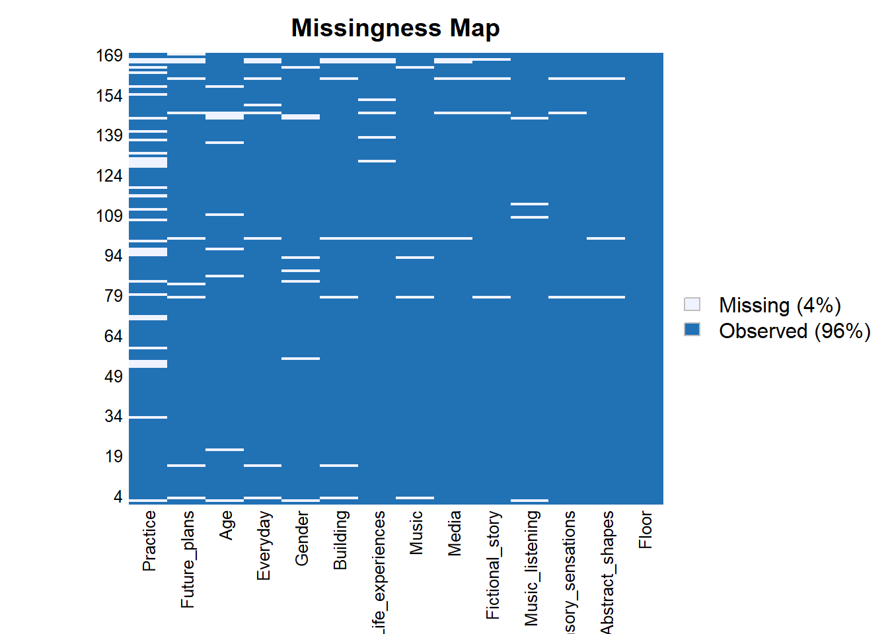
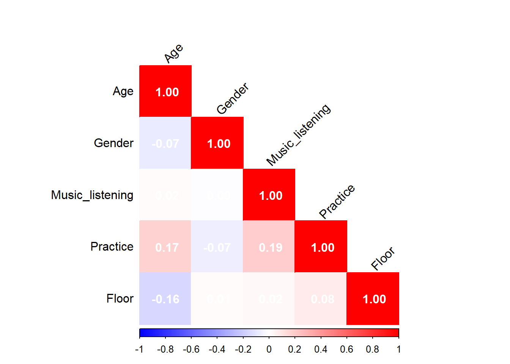

library(tidyverse)
library(MASS)
library(dplyr)
library(corrplot)
library(car)
library(knitr)
library(emmeans)In this section, we’ll experiment with the step() function in R to help select ordinal regression models for our data.
step() is not compatible with clm(), which is why we’ll use polr().
The step() function starts with a full model containing all the possible main effects (in this case all the possible demographic variables). It tests different combinations of variables and then keeps the model with the lowest AIC.
This is helpful when we’re dealing with lots of different outcome variables and lots of demographic inputs and we need to figure out which ones to use.
First some data loading, and demographic variable tidying.
data1 <- read_csv("https://raw.githubusercontent.com/hw3446/Final_Project_PUC/main/posts/Dataset_overview/working_data/data.csv")
data2 <- read_csv("https://raw.githubusercontent.com/hw3446/Final_Project_PUC/main/posts/Dataset_overview/working_data/data2.csv")outcome_vars <- c("Fictional_story", "Abstract_shapes", "Sensory_sensations",
"Life_experiences", "Media", "Music", "Future_plans",
"Building", "Everyday")
# Converting outcome variables to factors with consistent levels for each thought type
data1[outcome_vars] <- lapply(data1[outcome_vars], factor,
levels = c("Not at all", "A small amount of the time",
"A moderate amount of the time", "Most of the time",
"All of the time"))
data2[outcome_vars] <- lapply(data2[outcome_vars], factor,
levels = c("Not at all", "A small amount of the time",
"A moderate amount of the time", "Most of the time",
"All of the time"))
#Remaking the floor variable
data1 <- data1 %>%
mutate(Floor = ifelse(Location %in% c("A", "B", "C", "D", "E", "F"), "Downstairs", "Upstairs")) %>% relocate(Floor, .after = Location)
data2 <- data2 %>%
mutate(Floor = ifelse(Location %in% c("A", "B", "C", "D", "E", "F"), "Downstairs", "Upstairs")) %>% relocate(Floor, .after = Location)
#Making sure demographic variables are classed in the right way.
data1$Age <- as.numeric(data1$Age)
data2$Age <- as.numeric(data2$Age)
data1$Practice <- as.numeric(as.character(data1$Practice))
data2$Practice <- as.numeric(as.character(data2$Practice))
data1$Gender <- factor(data1$Gender, levels = c('Male', 'Female', 'Other'))
data2$Gender <- factor(data2$Gender, levels = c('Male', 'Female', 'Other'))
data1$Music_listening <- factor(data1$Music_listening, levels = c('Very rarely', 'Somewhat rarely', 'Moderately frequently', 'Frequently', 'Very frequently'))
data2$Music_listening <- factor(data2$Music_listening, levels = c('Very rarely', 'Somewhat rarely', 'Moderately frequently', 'Frequently', 'Very frequently'))
data1$Floor <- factor(data1$Floor, levels = c('Downstairs', 'Upstairs'))
data2$Floor <- factor(data2$Floor, levels = c('Downstairs', 'Upstairs'))We also have some NAs in our dataframe, so before running the models, we need to figure out what to do with these.
Here’s a map of our missing data:
library(Amelia)
demographics_outcomes <- c('Age', 'Gender', 'Music_listening', 'Practice', 'Floor', "Fictional_story", "Abstract_shapes", "Sensory_sensations",
"Life_experiences", "Media", "Music", "Future_plans",
"Building", "Everyday")
dem_out <- dplyr::select(data1, all_of(demographics_outcomes))
missmap(dem_out)
We can hypothesise that the data is MCAR (missing completely at random), i.e. that missing values aren’t correlated with any particular variables. Let’s test this.
library(naniar)
mcar_test(dem_out)# A tibble: 1 × 4
statistic df p.value missing.patterns
<dbl> <dbl> <dbl> <int>
1 250. 237 0.265 23p > 0.05, so there is insufficient evidence to reject the null hypothesis that the data is MCAR.
Based on this, we can use multiple imputation to deal with the NAs. This has the advantage of preserving the data structure and reflecting uncertainty without data loss.
library(mice)
imputed_data1 <- mice(data1, m = 5, method = 'pmm', seed = 123, print = FALSE)
completed_data1 <- complete(imputed_data1, 1)Let’s now run the step() function with our imputed data. We’ll start the function using all of the demographic inputs, and have likelihood of imagining a fictional story as our outcome variable.
#Specifying a model with the maximum number of demographic inputs.
model_fiction_imp <- polr(Fictional_story ~ Age + Gender + Music_listening + Practice + Floor,
data = completed_data1, Hess = TRUE, method = "logistic")
#Running the step() function
stepwise_model_imp <- step(model_fiction_imp)Start: AIC=488.79
Fictional_story ~ Age + Gender + Music_listening + Practice +
Floor
Df AIC
- Gender 2 485.38
- Practice 1 486.85
- Music_listening 4 486.89
- Floor 1 487.06
<none> 488.79
- Age 1 494.12
Step: AIC=485.38
Fictional_story ~ Age + Music_listening + Practice + Floor
Df AIC
- Practice 1 483.40
- Floor 1 483.83
- Music_listening 4 484.40
<none> 485.38
- Age 1 491.61
Step: AIC=483.4
Fictional_story ~ Age + Music_listening + Floor
Df AIC
- Floor 1 481.89
- Music_listening 4 482.80
<none> 483.40
- Age 1 489.82
Step: AIC=481.89
Fictional_story ~ Age + Music_listening
Df AIC
- Music_listening 4 481.00
<none> 481.89
- Age 1 487.90
Step: AIC=481
Fictional_story ~ Age
Df AIC
<none> 481.00
- Age 1 485.74summary(stepwise_model_imp)Call:
polr(formula = Fictional_story ~ Age, data = completed_data1,
Hess = TRUE, method = "logistic")
Coefficients:
Value Std. Error t value
Age -0.01812 0.007012 -2.584
Intercepts:
Value Std. Error
Not at all|A small amount of the time -1.4612 0.4338
A small amount of the time|A moderate amount of the time -0.4828 0.4176
A moderate amount of the time|Most of the time 0.4619 0.4269
Most of the time|All of the time 2.5021 0.5883
t value
Not at all|A small amount of the time -3.3686
A small amount of the time|A moderate amount of the time -1.1563
A moderate amount of the time|Most of the time 1.0821
Most of the time|All of the time 4.2530
Residual Deviance: 471.0048
AIC: 481.0048 Here, step() ran through all the possible demographics to find the model with the lowest AIC (an estimator of prediction error). In this case the most successful model was one with just age as a demographic input.
We can run the step() function and loop through all the possible outcome variables using the imputed data.
# List to store results
models <- list()
stepwise_models <- list()
# Loop through selected outcomes
for (outcome in outcome_vars) {
formula <- as.formula(paste(outcome, "~ Age + Gender + Music_listening + Practice + Floor"))
tryCatch({
# Fit proportional odds model
model <- polr(formula, data = completed_data1, Hess = TRUE, method = "logistic",
control = list(maxit = 1000), na.action = na.exclude)
# Store model
models[[outcome]] <- model
# Print summary
cat("\nSummary for", outcome, ":\n")
print(summary(model))
# Perform stepwise regression
step_model <- step(model, direction = "backward", trace = FALSE)
stepwise_models[[outcome]] <- step_model
# Print stepwise summary
cat("\nStepwise Model Summary for", outcome, ":\n")
print(summary(step_model))
}, error = function(e) {
cat("\nSkipping", outcome, "due to error:", conditionMessage(e), "\n")
})
}
Summary for Fictional_story :
Call:
polr(formula = formula, data = completed_data1, control = list(maxit = 1000),
na.action = na.exclude, Hess = TRUE, method = "logistic")
Coefficients:
Value Std. Error t value
Age -0.020064 0.007472 -2.6854
GenderFemale -0.184649 0.289509 -0.6378
GenderOther 0.682474 1.815033 0.3760
Music_listeningSomewhat rarely 0.583267 1.320177 0.4418
Music_listeningModerately frequently 0.182789 1.182258 0.1546
Music_listeningFrequently -0.601948 1.155526 -0.5209
Music_listeningVery frequently -0.430974 1.155553 -0.3730
Practice -0.001622 0.006711 -0.2417
FloorUpstairs -0.164728 0.316061 -0.5212
Intercepts:
Value Std. Error
Not at all|A small amount of the time -2.1013 1.2172
A small amount of the time|A moderate amount of the time -1.0931 1.2048
A moderate amount of the time|Most of the time -0.1208 1.2087
Most of the time|All of the time 1.9778 1.2823
t value
Not at all|A small amount of the time -1.7263
A small amount of the time|A moderate amount of the time -0.9073
A moderate amount of the time|Most of the time -0.1000
Most of the time|All of the time 1.5424
Residual Deviance: 462.7904
AIC: 488.7904
Stepwise Model Summary for Fictional_story :
Call:
polr(formula = Fictional_story ~ Age, data = completed_data1,
control = list(maxit = 1000), na.action = na.exclude, Hess = TRUE,
method = "logistic")
Coefficients:
Value Std. Error t value
Age -0.01812 0.007012 -2.584
Intercepts:
Value Std. Error
Not at all|A small amount of the time -1.4612 0.4338
A small amount of the time|A moderate amount of the time -0.4828 0.4176
A moderate amount of the time|Most of the time 0.4619 0.4269
Most of the time|All of the time 2.5021 0.5883
t value
Not at all|A small amount of the time -3.3686
A small amount of the time|A moderate amount of the time -1.1563
A moderate amount of the time|Most of the time 1.0821
Most of the time|All of the time 4.2530
Residual Deviance: 471.0048
AIC: 481.0048
Summary for Abstract_shapes :
Call:
polr(formula = formula, data = completed_data1, control = list(maxit = 1000),
na.action = na.exclude, Hess = TRUE, method = "logistic")
Coefficients:
Value Std. Error t value
Age -0.013730 0.007830 -1.75340
GenderFemale 0.237260 0.305566 0.77646
GenderOther 0.500606 1.670889 0.29960
Music_listeningSomewhat rarely -0.401635 1.475343 -0.27223
Music_listeningModerately frequently -0.183899 1.375480 -0.13370
Music_listeningFrequently -0.223421 1.350183 -0.16547
Music_listeningVery frequently -0.067906 1.345595 -0.05047
Practice 0.005251 0.006897 0.76139
FloorUpstairs -0.190754 0.327727 -0.58205
Intercepts:
Value Std. Error
Not at all|A small amount of the time -0.6245 1.3874
A small amount of the time|A moderate amount of the time 0.4881 1.3843
A moderate amount of the time|Most of the time 1.8611 1.3998
Most of the time|All of the time 4.3210 1.6951
t value
Not at all|A small amount of the time -0.4501
A small amount of the time|A moderate amount of the time 0.3526
A moderate amount of the time|Most of the time 1.3296
Most of the time|All of the time 2.5492
Residual Deviance: 381.9298
AIC: 407.9298
Stepwise Model Summary for Abstract_shapes :
Call:
polr(formula = Abstract_shapes ~ Age, data = completed_data1,
control = list(maxit = 1000), na.action = na.exclude, Hess = TRUE,
method = "logistic")
Coefficients:
Value Std. Error t value
Age -0.01305 0.00737 -1.771
Intercepts:
Value Std. Error
Not at all|A small amount of the time -0.5212 0.4459
A small amount of the time|A moderate amount of the time 0.5788 0.4459
A moderate amount of the time|Most of the time 1.9430 0.5062
Most of the time|All of the time 4.4013 1.0795
t value
Not at all|A small amount of the time -1.1687
A small amount of the time|A moderate amount of the time 1.2980
A moderate amount of the time|Most of the time 3.8384
Most of the time|All of the time 4.0773
Residual Deviance: 383.8834
AIC: 393.8834
Summary for Sensory_sensations :
Call:
polr(formula = formula, data = completed_data1, control = list(maxit = 1000),
na.action = na.exclude, Hess = TRUE, method = "logistic")
Coefficients:
Value Std. Error t value
Age 0.0001992 0.008458 0.023554
GenderFemale 0.1648059 0.331730 0.496807
GenderOther 1.5234446 1.739314 0.875888
Music_listeningSomewhat rarely 13.2322740 0.591145 22.384154
Music_listeningModerately frequently 13.1572183 0.358521 36.698599
Music_listeningFrequently 13.4798311 0.295118 45.675998
Music_listeningVery frequently 13.3047288 0.288087 46.182956
Practice -0.0037578 0.007612 -0.493665
FloorUpstairs 0.0009349 0.357546 0.002615
Intercepts:
Value Std. Error
Not at all|A small amount of the time 14.0608 0.5241
A small amount of the time|A moderate amount of the time 15.3822 0.5544
A moderate amount of the time|Most of the time 16.6777 0.6543
Most of the time|All of the time 93.0447 0.6543
t value
Not at all|A small amount of the time 26.8284
A small amount of the time|A moderate amount of the time 27.7461
A moderate amount of the time|Most of the time 25.4902
Most of the time|All of the time 142.2094
Residual Deviance: 308.8061
AIC: 334.8061
Stepwise Model Summary for Sensory_sensations :
Call:
polr(formula = Sensory_sensations ~ 1, data = completed_data1,
control = list(maxit = 1000), na.action = na.exclude, Hess = TRUE,
method = "logistic")
No coefficients
Intercepts:
Value Std. Error
Not at all|A small amount of the time 0.7020 0.1634
A small amount of the time|A moderate amount of the time 2.0082 0.2381
A moderate amount of the time|Most of the time 3.3019 0.4157
Most of the time|All of the time 15.0784 151.2038
t value
Not at all|A small amount of the time 4.2959
A small amount of the time|A moderate amount of the time 8.4329
A moderate amount of the time|Most of the time 7.9433
Most of the time|All of the time 0.0997
Residual Deviance: 312.1081
AIC: 320.1081
Summary for Life_experiences :
Call:
polr(formula = formula, data = completed_data1, control = list(maxit = 1000),
na.action = na.exclude, Hess = TRUE, method = "logistic")
Coefficients:
Value Std. Error t value
Age -0.0304006 0.007787 -3.90393
GenderFemale 0.5929295 0.290624 2.04019
GenderOther 0.2018541 1.707436 0.11822
Music_listeningSomewhat rarely -1.5339005 1.487048 -1.03151
Music_listeningModerately frequently -0.9692451 1.393042 -0.69578
Music_listeningFrequently -1.4862291 1.372219 -1.08308
Music_listeningVery frequently -1.2177971 1.368478 -0.88989
Practice -0.0003402 0.006825 -0.04984
FloorUpstairs 0.1495517 0.313627 0.47685
Intercepts:
Value Std. Error
Not at all|A small amount of the time -3.9081 1.4339
A small amount of the time|A moderate amount of the time -2.6223 1.4210
A moderate amount of the time|Most of the time -1.0215 1.4047
Most of the time|All of the time 1.3766 1.4702
t value
Not at all|A small amount of the time -2.7256
A small amount of the time|A moderate amount of the time -1.8454
A moderate amount of the time|Most of the time -0.7272
Most of the time|All of the time 0.9363
Residual Deviance: 463.1297
AIC: 489.1297
Stepwise Model Summary for Life_experiences :
Call:
polr(formula = Life_experiences ~ Age + Gender, data = completed_data1,
control = list(maxit = 1000), na.action = na.exclude, Hess = TRUE,
method = "logistic")
Coefficients:
Value Std. Error t value
Age -0.03024 0.007502 -4.030
GenderFemale 0.61570 0.285973 2.153
GenderOther -0.17772 1.572352 -0.113
Intercepts:
Value Std. Error
Not at all|A small amount of the time -2.7295 0.5186
A small amount of the time|A moderate amount of the time -1.4508 0.4939
A moderate amount of the time|Most of the time 0.1332 0.4809
Most of the time|All of the time 2.5074 0.6564
t value
Not at all|A small amount of the time -5.2632
A small amount of the time|A moderate amount of the time -2.9371
A moderate amount of the time|Most of the time 0.2770
Most of the time|All of the time 3.8197
Residual Deviance: 466.1446
AIC: 480.1446
Summary for Media :
Call:
polr(formula = formula, data = completed_data1, control = list(maxit = 1000),
na.action = na.exclude, Hess = TRUE, method = "logistic")
Coefficients:
Value Std. Error t value
Age -0.020246 0.008302 -2.438803
GenderFemale -0.193004 0.324828 -0.594175
GenderOther 0.416913 1.729191 0.241103
Music_listeningSomewhat rarely 1.103021 1.445189 0.763237
Music_listeningModerately frequently -0.210773 1.361649 -0.154792
Music_listeningFrequently -0.229691 1.327884 -0.172976
Music_listeningVery frequently -0.011940 1.317232 -0.009064
Practice -0.002701 0.007657 -0.352757
FloorUpstairs 0.212293 0.376081 0.564488
Intercepts:
Value Std. Error
Not at all|A small amount of the time -0.6048 1.3980
A small amount of the time|A moderate amount of the time 0.3566 1.3988
A moderate amount of the time|Most of the time 1.9812 1.4332
Most of the time|All of the time 268.1394 1.4332
t value
Not at all|A small amount of the time -0.4326
A small amount of the time|A moderate amount of the time 0.2549
A moderate amount of the time|Most of the time 1.3823
Most of the time|All of the time 187.0921
Residual Deviance: 327.3299
AIC: 353.3299
Stepwise Model Summary for Media :
Call:
polr(formula = Media ~ Age, data = completed_data1, control = list(maxit = 1000),
na.action = na.exclude, Hess = TRUE, method = "logistic")
Coefficients:
Value Std. Error t value
Age -0.02224 0.007854 -2.832
Intercepts:
Value Std. Error
Not at all|A small amount of the time -0.6811 0.4617
A small amount of the time|A moderate amount of the time 0.2449 0.4587
A moderate amount of the time|Most of the time 1.8131 0.5417
Most of the time|All of the time 9.7208 19.2935
t value
Not at all|A small amount of the time -1.4753
A small amount of the time|A moderate amount of the time 0.5339
A moderate amount of the time|Most of the time 3.3471
Most of the time|All of the time 0.5038
Residual Deviance: 333.4143
AIC: 343.4143
Summary for Music :
Call:
polr(formula = formula, data = completed_data1, control = list(maxit = 1000),
na.action = na.exclude, Hess = TRUE, method = "logistic")
Coefficients:
Value Std. Error t value
Age -0.005387 0.007741 -0.69591
GenderFemale 0.342148 0.294890 1.16026
GenderOther 0.172715 1.798501 0.09603
Music_listeningSomewhat rarely 2.917091 1.358508 2.14728
Music_listeningModerately frequently 2.184330 1.243854 1.75610
Music_listeningFrequently 2.433851 1.222099 1.99153
Music_listeningVery frequently 3.435359 1.230974 2.79076
Practice 0.018228 0.006886 2.64728
FloorUpstairs -0.171472 0.318814 -0.53784
Intercepts:
Value Std. Error
Not at all|A small amount of the time -0.6953 1.2888
A small amount of the time|A moderate amount of the time 0.6585 1.2562
A moderate amount of the time|Most of the time 2.1175 1.2730
Most of the time|All of the time 4.2542 1.2971
t value
Not at all|A small amount of the time -0.5395
A small amount of the time|A moderate amount of the time 0.5242
A moderate amount of the time|Most of the time 1.6634
Most of the time|All of the time 3.2798
Residual Deviance: 431.4689
AIC: 457.4689
Stepwise Model Summary for Music :
Call:
polr(formula = Music ~ Music_listening + Practice, data = completed_data1,
control = list(maxit = 1000), na.action = na.exclude, Hess = TRUE,
method = "logistic")
Coefficients:
Value Std. Error t value
Music_listeningSomewhat rarely 2.79040 1.375870 2.028
Music_listeningModerately frequently 2.01818 1.283926 1.572
Music_listeningFrequently 2.29860 1.273278 1.805
Music_listeningVery frequently 3.30313 1.276230 2.588
Practice 0.01665 0.006695 2.487
Intercepts:
Value Std. Error
Not at all|A small amount of the time -0.6054 1.2909
A small amount of the time|A moderate amount of the time 0.7306 1.2571
A moderate amount of the time|Most of the time 2.1838 1.2732
Most of the time|All of the time 4.3102 1.2978
t value
Not at all|A small amount of the time -0.4690
A small amount of the time|A moderate amount of the time 0.5812
A moderate amount of the time|Most of the time 1.7152
Most of the time|All of the time 3.3211
Residual Deviance: 433.5155
AIC: 451.5155
Summary for Future_plans :
Call:
polr(formula = formula, data = completed_data1, control = list(maxit = 1000),
na.action = na.exclude, Hess = TRUE, method = "logistic")
Coefficients:
Value Std. Error t value
Age -0.0517714 0.008569 -6.04139
GenderFemale -0.1757382 0.295222 -0.59528
GenderOther -1.7209682 1.704173 -1.00986
Music_listeningSomewhat rarely 0.1894178 1.303459 0.14532
Music_listeningModerately frequently -0.2711655 1.197084 -0.22652
Music_listeningFrequently -0.9689112 1.178356 -0.82226
Music_listeningVery frequently -0.7089336 1.176264 -0.60270
Practice -0.0002543 0.007241 -0.03512
FloorUpstairs -0.1261378 0.323305 -0.39015
Intercepts:
Value Std. Error
Not at all|A small amount of the time -4.3831 1.2727
A small amount of the time|A moderate amount of the time -3.1203 1.2486
A moderate amount of the time|Most of the time -1.6050 1.2286
Most of the time|All of the time 0.2254 1.2871
t value
Not at all|A small amount of the time -3.4438
A small amount of the time|A moderate amount of the time -2.4990
A moderate amount of the time|Most of the time -1.3064
Most of the time|All of the time 0.1751
Residual Deviance: 425.4461
AIC: 451.4461
Stepwise Model Summary for Future_plans :
Call:
polr(formula = Future_plans ~ Age, data = completed_data1, control = list(maxit = 1000),
na.action = na.exclude, Hess = TRUE, method = "logistic")
Coefficients:
Value Std. Error t value
Age -0.04841 0.008102 -5.975
Intercepts:
Value Std. Error
Not at all|A small amount of the time -3.3726 0.5212
A small amount of the time|A moderate amount of the time -2.1392 0.4825
A moderate amount of the time|Most of the time -0.6560 0.4571
Most of the time|All of the time 1.1340 0.5808
t value
Not at all|A small amount of the time -6.4705
A small amount of the time|A moderate amount of the time -4.4338
A moderate amount of the time|Most of the time -1.4351
Most of the time|All of the time 1.9526
Residual Deviance: 431.1522
AIC: 441.1522
Summary for Building :
Call:
polr(formula = formula, data = completed_data1, control = list(maxit = 1000),
na.action = na.exclude, Hess = TRUE, method = "logistic")
Coefficients:
Value Std. Error t value
Age -0.024738 7.989e-03 -3.096e+00
GenderFemale -0.625787 3.082e-01 -2.031e+00
GenderOther -8.805429 6.902e-05 -1.276e+05
Music_listeningSomewhat rarely 12.036353 5.388e-01 2.234e+01
Music_listeningModerately frequently 12.607143 3.224e-01 3.910e+01
Music_listeningFrequently 12.971602 2.774e-01 4.675e+01
Music_listeningVery frequently 13.179227 2.759e-01 4.777e+01
Practice -0.002493 6.962e-03 -3.581e-01
FloorUpstairs 0.650667 3.484e-01 1.868e+00
Intercepts:
Value
Not at all|A small amount of the time 11.3396
A small amount of the time|A moderate amount of the time 13.2252
A moderate amount of the time|Most of the time 14.9084
Most of the time|All of the time 16.2193
Std. Error
Not at all|A small amount of the time 0.5042
A small amount of the time|A moderate amount of the time 0.5043
A moderate amount of the time|Most of the time 0.5896
Most of the time|All of the time 0.8369
t value
Not at all|A small amount of the time 22.4880
A small amount of the time|A moderate amount of the time 26.2223
A moderate amount of the time|Most of the time 25.2843
Most of the time|All of the time 19.3791
Residual Deviance: 359.5096
AIC: 385.5096
Stepwise Model Summary for Building :
Call:
polr(formula = Building ~ Age + Gender + Floor, data = completed_data1,
control = list(maxit = 1000), na.action = na.exclude, Hess = TRUE,
method = "logistic")
Coefficients:
Value Std. Error t value
Age -0.02467 7.841e-03 -3.147e+00
GenderFemale -0.57858 2.998e-01 -1.930e+00
GenderOther -15.17738 1.448e-07 -1.048e+08
FloorUpstairs 0.59173 3.327e-01 1.779e+00
Intercepts:
Value
Not at all|A small amount of the time -1.500500e+00
A small amount of the time|A moderate amount of the time 3.271000e-01
A moderate amount of the time|Most of the time 1.972800e+00
Most of the time|All of the time 3.272700e+00
Std. Error
Not at all|A small amount of the time 5.893000e-01
A small amount of the time|A moderate amount of the time 5.767000e-01
A moderate amount of the time|Most of the time 6.475000e-01
Most of the time|All of the time 8.783000e-01
t value
Not at all|A small amount of the time -2.546400e+00
A small amount of the time|A moderate amount of the time 5.673000e-01
A moderate amount of the time|Most of the time 3.046600e+00
Most of the time|All of the time 3.726000e+00
Residual Deviance: 367.5854
AIC: 383.5854
Summary for Everyday :
Call:
polr(formula = formula, data = completed_data1, control = list(maxit = 1000),
na.action = na.exclude, Hess = TRUE, method = "logistic")
Coefficients:
Value Std. Error t value
Age -0.02801 0.008060 -3.47493
GenderFemale 0.12354 0.295178 0.41851
GenderOther 0.31282 1.766320 0.17710
Music_listeningSomewhat rarely -1.36382 1.370967 -0.99478
Music_listeningModerately frequently 0.22782 1.231383 0.18501
Music_listeningFrequently -0.29107 1.211772 -0.24020
Music_listeningVery frequently 0.08650 1.206193 0.07172
Practice -0.01023 0.007069 -1.44743
FloorUpstairs -0.02558 0.330031 -0.07751
Intercepts:
Value Std. Error
Not at all|A small amount of the time -2.5242 1.2736
A small amount of the time|A moderate amount of the time -0.6805 1.2596
A moderate amount of the time|Most of the time 0.8269 1.2766
Most of the time|All of the time 2.1008 1.3399
t value
Not at all|A small amount of the time -1.9820
A small amount of the time|A moderate amount of the time -0.5402
A moderate amount of the time|Most of the time 0.6477
Most of the time|All of the time 1.5679
Residual Deviance: 415.8977
AIC: 441.8977
Stepwise Model Summary for Everyday :
Call:
polr(formula = Everyday ~ Age, data = completed_data1, control = list(maxit = 1000),
na.action = na.exclude, Hess = TRUE, method = "logistic")
Coefficients:
Value Std. Error t value
Age -0.02455 0.007422 -3.307
Intercepts:
Value Std. Error
Not at all|A small amount of the time -2.1073 0.4742
A small amount of the time|A moderate amount of the time -0.3377 0.4466
A moderate amount of the time|Most of the time 1.1491 0.4855
Most of the time|All of the time 2.4138 0.6321
t value
Not at all|A small amount of the time -4.4437
A small amount of the time|A moderate amount of the time -0.7563
A moderate amount of the time|Most of the time 2.3665
Most of the time|All of the time 3.8188
Residual Deviance: 424.6746
AIC: 434.6746 From the above, we can see that the models with the lowest AIC (using just main effects) are as follows:
Fictional story: polr(formula = Fictional_story ~ Age, data = completed_data1, control = list(maxit = 1000), na.action = na.exclude, Hess = TRUE, method = “probit”)
Abstract shapes: polr(formula = Abstract_shapes ~ Age, data = completed_data1, control = list(maxit = 1000), na.action = na.exclude, Hess = TRUE, method = “probit”)
Sensory sensations: polr(formula = Sensory_sensations ~ 1, data = completed_data1, control = list(maxit = 1000), na.action = na.exclude, Hess = TRUE, method = “probit”)
Life experiences: polr(formula = Life_experiences ~ Age + Gender, data = completed_data1, control = list(maxit = 1000), na.action = na.exclude, Hess = TRUE, method = “probit”)
Media: polr(formula = Media ~ Age, data = completed_data1, control = list(maxit = 1000), na.action = na.exclude, Hess = TRUE, method = “probit”)
Music: polr(formula = Music ~ Music_listening + Practice, data = completed_data1, control = list(maxit = 1000), na.action = na.exclude, Hess = TRUE, method = “probit”)
Future plans: polr(formula = Future_plans ~ Age, data = completed_data1, control = list(maxit = 1000), na.action = na.exclude, Hess = TRUE, method = “probit”)
Building: polr(formula = Building ~ Age + Gender + Music_listening + Floor, data = completed_data1, control = list(maxit = 1000), na.action = na.exclude, Hess = TRUE, method = “probit”)
Everyday: polr(formula = Everyday ~ Age, data = completed_data1, control = list(maxit = 1000), na.action = na.exclude, Hess = TRUE, method = “probit”)
Let’s also look at the interactions between the demographic variables and check for multicollinearity.
library(conflicted)
conflict_prefer("filter", "dplyr")
demographics <- c('Age', 'Gender', 'Music_listening', 'Practice', 'Floor')
demographics_data <- dplyr::select(data1, all_of(demographics))
# Convert categorical variables to numeric
demographics_numeric <- demographics_data %>%
mutate(
Gender = as.numeric(factor(Gender)),
Music_listening = as.numeric(factor(Music_listening, ordered = TRUE)),
Floor = as.numeric(factor(Floor))
)
# Compute correlation matrix
cor_matrix <- cor(demographics_numeric, use = "pairwise.complete.obs")
corrplot(cor_matrix, method = "color", type = "lower",
tl.col = "black", tl.srt = 45, addCoef.col = "white",
col = colorRampPalette(c("blue", "white", "red"))(200))
#Checking for collinearity
model1 <- lm(Age ~ Practice + Gender + Music_listening + Floor, data = demographics_numeric)
model2 <- lm(Gender ~ Age + Practice + Music_listening + Floor, data = demographics_numeric)
model3 <- lm(Practice ~ Age + Gender + Music_listening + Floor, data = demographics_numeric)
model4 <- lm(Music_listening ~ Age + Gender + Practice + Floor, data = demographics_numeric)
model5 <- lm(Floor ~ Age + Gender + Practice + Music_listening, data = demographics_numeric)
vif(model1) Practice Gender Music_listening Floor
1.036377 1.002153 1.034110 1.003875 vif(model2) Age Practice Music_listening Floor
1.086216 1.067477 1.034662 1.059068 vif(model3) Age Gender Music_listening Floor
1.064866 1.011938 1.004652 1.051720 vif(model4) Age Gender Practice Floor
1.096117 1.011828 1.036402 1.058475 vif(model5) Age Gender Practice Music_listening
1.039690 1.011967 1.060100 1.034224 All vif() outputs are close to 1, indicating that multicollinearity shouldn’t be a problem.
In the post on ‘Ordinal regression: final models’, we’ll use these step() results to run some final model visualisations.
Let’s also just rerun the above steps for the second dataset.
imputed_data2 <- mice(data2, m = 5, method = 'pmm', seed = 123, print = FALSE)
completed_data2 <- complete(imputed_data2, 1)# List to store results
models <- list()
stepwise_models <- list()
# Loop through selected outcomes
for (outcome in outcome_vars) {
formula <- as.formula(paste(outcome, "~ Age + Gender + Music_listening + Practice + Floor"))
tryCatch({
# Fit proportional odds model
model <- polr(formula, data = completed_data2, Hess = TRUE, method = "logistic",
control = list(maxit = 1000), na.action = na.exclude)
# Store model
models[[outcome]] <- model
# Print summary
cat("\nSummary for", outcome, ":\n")
print(summary(model))
# Perform stepwise regression
step_model <- step(model, direction = "backward", trace = FALSE)
stepwise_models[[outcome]] <- step_model
# Print stepwise summary
cat("\nStepwise Model Summary for", outcome, ":\n")
print(summary(step_model))
}, error = function(e) {
cat("\nSkipping", outcome, "due to error:", conditionMessage(e), "\n")
})
}
Summary for Fictional_story :
Call:
polr(formula = formula, data = completed_data2, control = list(maxit = 1000),
na.action = na.exclude, Hess = TRUE, method = "logistic")
Coefficients:
Value Std. Error t value
Age -0.0176243 0.008293 -2.12513
GenderFemale -0.3661109 0.314182 -1.16528
GenderOther 0.0710648 1.692232 0.04199
Music_listeningSomewhat rarely -1.2636608 1.352075 -0.93461
Music_listeningModerately frequently -2.2711666 1.236248 -1.83714
Music_listeningFrequently -2.1992976 1.205457 -1.82445
Music_listeningVery frequently -2.3862820 1.194958 -1.99696
Practice -0.0007123 0.007227 -0.09857
FloorUpstairs 0.5244737 0.363286 1.44369
Intercepts:
Value Std. Error
Not at all|A small amount of the time -2.9236 1.2551
A small amount of the time|A moderate amount of the time -2.0166 1.2438
A moderate amount of the time|Most of the time -0.9469 1.2332
Most of the time|All of the time 1.4844 1.3677
t value
Not at all|A small amount of the time -2.3293
A small amount of the time|A moderate amount of the time -1.6214
A moderate amount of the time|Most of the time -0.7679
Most of the time|All of the time 1.0853
Residual Deviance: 373.6608
AIC: 399.6608
Stepwise Model Summary for Fictional_story :
Call:
polr(formula = Fictional_story ~ Age, data = completed_data2,
control = list(maxit = 1000), na.action = na.exclude, Hess = TRUE,
method = "logistic")
Coefficients:
Value Std. Error t value
Age -0.02029 0.007802 -2.6
Intercepts:
Value Std. Error
Not at all|A small amount of the time -1.0098 0.4749
A small amount of the time|A moderate amount of the time -0.1455 0.4662
A moderate amount of the time|Most of the time 0.8795 0.4856
Most of the time|All of the time 3.2507 0.8239
t value
Not at all|A small amount of the time -2.1262
A small amount of the time|A moderate amount of the time -0.3121
A moderate amount of the time|Most of the time 1.8112
Most of the time|All of the time 3.9453
Residual Deviance: 383.2349
AIC: 393.2349
Summary for Abstract_shapes :
Call:
polr(formula = formula, data = completed_data2, control = list(maxit = 1000),
na.action = na.exclude, Hess = TRUE, method = "logistic")
Coefficients:
Value Std. Error t value
Age -0.013355 9.113e-03 -1.466e+00
GenderFemale -0.256250 3.474e-01 -7.377e-01
GenderOther -15.602103 3.315e-07 -4.706e+07
Music_listeningSomewhat rarely 0.059382 1.493e+00 3.978e-02
Music_listeningModerately frequently -0.556828 1.367e+00 -4.073e-01
Music_listeningFrequently -0.160354 1.330e+00 -1.206e-01
Music_listeningVery frequently 0.176847 1.316e+00 1.344e-01
Practice -0.006678 8.183e-03 -8.161e-01
FloorUpstairs -0.535143 3.764e-01 -1.422e+00
Intercepts:
Value
Not at all|A small amount of the time -6.850000e-01
A small amount of the time|A moderate amount of the time 4.053000e-01
A moderate amount of the time|Most of the time 1.411900e+00
Most of the time|All of the time 3.681900e+00
Std. Error
Not at all|A small amount of the time 1.355500e+00
A small amount of the time|A moderate amount of the time 1.356200e+00
A moderate amount of the time|Most of the time 1.380000e+00
Most of the time|All of the time 1.669700e+00
t value
Not at all|A small amount of the time -5.053000e-01
A small amount of the time|A moderate amount of the time 2.988000e-01
A moderate amount of the time|Most of the time 1.023100e+00
Most of the time|All of the time 2.205100e+00
Residual Deviance: 294.3223
AIC: 320.3223
Stepwise Model Summary for Abstract_shapes :
Call:
polr(formula = Abstract_shapes ~ 1, data = completed_data2, control = list(maxit = 1000),
na.action = na.exclude, Hess = TRUE, method = "logistic")
No coefficients
Intercepts:
Value Std. Error
Not at all|A small amount of the time 0.7793 0.1708
A small amount of the time|A moderate amount of the time 1.8289 0.2297
A moderate amount of the time|Most of the time 2.8134 0.3432
Most of the time|All of the time 5.0626 1.0032
t value
Not at all|A small amount of the time 4.5627
A small amount of the time|A moderate amount of the time 7.9629
A moderate amount of the time|Most of the time 8.1979
Most of the time|All of the time 5.0467
Residual Deviance: 302.6345
AIC: 310.6345
Summary for Sensory_sensations :
Call:
polr(formula = formula, data = completed_data2, control = list(maxit = 1000),
na.action = na.exclude, Hess = TRUE, method = "logistic")
Coefficients:
Value Std. Error t value
Age -0.014536 9.370e-03 -1.551e+00
GenderFemale -0.147536 3.628e-01 -4.067e-01
GenderOther -9.402456 3.556e-05 -2.644e+05
Music_listeningSomewhat rarely 12.479157 5.942e-01 2.100e+01
Music_listeningModerately frequently 12.685798 3.600e-01 3.524e+01
Music_listeningFrequently 12.152633 3.471e-01 3.501e+01
Music_listeningVery frequently 12.266885 3.126e-01 3.925e+01
Practice -0.005029 8.280e-03 -6.074e-01
FloorUpstairs 0.074309 4.013e-01 1.852e-01
Intercepts:
Value
Not at all|A small amount of the time 12.3461
A small amount of the time|A moderate amount of the time 13.8985
A moderate amount of the time|Most of the time 14.8317
Most of the time|All of the time 5159.6273
Std. Error
Not at all|A small amount of the time 0.5724
A small amount of the time|A moderate amount of the time 0.6122
A moderate amount of the time|Most of the time 0.6989
Most of the time|All of the time 0.6989
t value
Not at all|A small amount of the time 21.5695
A small amount of the time|A moderate amount of the time 22.7023
A moderate amount of the time|Most of the time 21.2228
Most of the time|All of the time 7382.9711
Residual Deviance: 246.2747
AIC: 272.2747
Stepwise Model Summary for Sensory_sensations :
Call:
polr(formula = Sensory_sensations ~ 1, data = completed_data2,
control = list(maxit = 1000), na.action = na.exclude, Hess = TRUE,
method = "logistic")
No coefficients
Intercepts:
Value Std. Error
Not at all|A small amount of the time 0.9921 0.1785
A small amount of the time|A moderate amount of the time 2.5049 0.3002
A moderate amount of the time|Most of the time 3.4256 0.4542
Most of the time|All of the time 12.7680 49.7515
t value
Not at all|A small amount of the time 5.5572
A small amount of the time|A moderate amount of the time 8.3446
A moderate amount of the time|Most of the time 7.5424
Most of the time|All of the time 0.2566
Residual Deviance: 252.8352
AIC: 260.8352
Summary for Life_experiences :
Call:
polr(formula = formula, data = completed_data2, control = list(maxit = 1000),
na.action = na.exclude, Hess = TRUE, method = "logistic")
Coefficients:
Value Std. Error t value
Age -0.021272 0.007879 -2.6999
GenderFemale -0.298710 0.295125 -1.0121
GenderOther 2.931900 1.781000 1.6462
Music_listeningSomewhat rarely -0.809748 1.265101 -0.6401
Music_listeningModerately frequently 0.661266 1.138221 0.5810
Music_listeningFrequently 0.372385 1.112223 0.3348
Music_listeningVery frequently 0.639700 1.101369 0.5808
Practice -0.002229 0.006700 -0.3326
FloorUpstairs 0.322170 0.322950 0.9976
Intercepts:
Value Std. Error
Not at all|A small amount of the time -1.6440 1.1589
A small amount of the time|A moderate amount of the time -0.3189 1.1516
A moderate amount of the time|Most of the time 0.8237 1.1603
Most of the time|All of the time 2.6953 1.2177
t value
Not at all|A small amount of the time -1.4187
A small amount of the time|A moderate amount of the time -0.2769
A moderate amount of the time|Most of the time 0.7099
Most of the time|All of the time 2.2134
Residual Deviance: 446.8888
AIC: 472.8888
Stepwise Model Summary for Life_experiences :
Call:
polr(formula = Life_experiences ~ Age, data = completed_data2,
control = list(maxit = 1000), na.action = na.exclude, Hess = TRUE,
method = "logistic")
Coefficients:
Value Std. Error t value
Age -0.02321 0.007526 -3.084
Intercepts:
Value Std. Error
Not at all|A small amount of the time -2.2314 0.4877
A small amount of the time|A moderate amount of the time -0.9508 0.4634
A moderate amount of the time|Most of the time 0.1533 0.4620
Most of the time|All of the time 1.9787 0.5738
t value
Not at all|A small amount of the time -4.5756
A small amount of the time|A moderate amount of the time -2.0520
A moderate amount of the time|Most of the time 0.3318
Most of the time|All of the time 3.4484
Residual Deviance: 454.8045
AIC: 464.8045
Summary for Media :
Call:
polr(formula = formula, data = completed_data2, control = list(maxit = 1000),
na.action = na.exclude, Hess = TRUE, method = "logistic")
Coefficients:
Value Std. Error t value
Age -0.014767 0.009688 -1.5242
GenderFemale -0.418432 0.378492 -1.1055
GenderOther 1.745932 1.760154 0.9919
Music_listeningSomewhat rarely -1.040284 1.273809 -0.8167
Music_listeningModerately frequently -1.458039 1.169141 -1.2471
Music_listeningFrequently -2.219542 1.160230 -1.9130
Music_listeningVery frequently -1.481384 1.107480 -1.3376
Practice -0.002888 0.008554 -0.3377
FloorUpstairs 0.485236 0.449504 1.0795
Intercepts:
Value Std. Error
Not at all|A small amount of the time -1.2535 1.2067
A small amount of the time|A moderate amount of the time -0.1662 1.2057
A moderate amount of the time|Most of the time 1.0471 1.2564
Most of the time|All of the time 1.7598 1.3207
t value
Not at all|A small amount of the time -1.0388
A small amount of the time|A moderate amount of the time -0.1379
A moderate amount of the time|Most of the time 0.8335
Most of the time|All of the time 1.3325
Residual Deviance: 254.7326
AIC: 280.7326
Stepwise Model Summary for Media :
Call:
polr(formula = Media ~ Age, data = completed_data2, control = list(maxit = 1000),
na.action = na.exclude, Hess = TRUE, method = "logistic")
Coefficients:
Value Std. Error t value
Age -0.01828 0.008859 -2.063
Intercepts:
Value Std. Error
Not at all|A small amount of the time 0.0223 0.5194
A small amount of the time|A moderate amount of the time 1.0413 0.5382
A moderate amount of the time|Most of the time 2.2217 0.6322
Most of the time|All of the time 2.9362 0.7518
t value
Not at all|A small amount of the time 0.0428
A small amount of the time|A moderate amount of the time 1.9347
A moderate amount of the time|Most of the time 3.5140
Most of the time|All of the time 3.9053
Residual Deviance: 264.7478
AIC: 274.7478
Summary for Music :
Call:
polr(formula = formula, data = completed_data2, control = list(maxit = 1000),
na.action = na.exclude, Hess = TRUE, method = "logistic")
Coefficients:
Value Std. Error t value
Age -0.01629 0.007932 -2.05327
GenderFemale 0.82657 0.301034 2.74576
GenderOther -2.61964 1.686989 -1.55285
Music_listeningSomewhat rarely 2.04670 1.261994 1.62180
Music_listeningModerately frequently 1.70255 1.148173 1.48283
Music_listeningFrequently 1.96472 1.130080 1.73856
Music_listeningVery frequently 2.46608 1.127378 2.18745
Practice 0.02553 0.007191 3.55084
FloorUpstairs 0.02884 0.322875 0.08932
Intercepts:
Value Std. Error
Not at all|A small amount of the time -1.1988 1.2055
A small amount of the time|A moderate amount of the time 0.0423 1.1665
A moderate amount of the time|Most of the time 1.4714 1.1704
Most of the time|All of the time 3.0368 1.1918
t value
Not at all|A small amount of the time -0.9944
A small amount of the time|A moderate amount of the time 0.0363
A moderate amount of the time|Most of the time 1.2572
Most of the time|All of the time 2.5481
Residual Deviance: 423.7763
AIC: 449.7763
Stepwise Model Summary for Music :
Call:
polr(formula = Music ~ Age + Gender + Practice, data = completed_data2,
control = list(maxit = 1000), na.action = na.exclude, Hess = TRUE,
method = "logistic")
Coefficients:
Value Std. Error t value
Age -0.01531 0.007775 -1.969
GenderFemale 0.86120 0.298794 2.882
GenderOther -2.55159 1.550274 -1.646
Practice 0.02563 0.006907 3.711
Intercepts:
Value Std. Error
Not at all|A small amount of the time -3.1609 0.6112
A small amount of the time|A moderate amount of the time -1.9195 0.5304
A moderate amount of the time|Most of the time -0.5277 0.5013
Most of the time|All of the time 0.9690 0.5088
t value
Not at all|A small amount of the time -5.1716
A small amount of the time|A moderate amount of the time -3.6190
A moderate amount of the time|Most of the time -1.0525
Most of the time|All of the time 1.9044
Residual Deviance: 431.5091
AIC: 447.5091
Summary for Future_plans :
Call:
polr(formula = formula, data = completed_data2, control = list(maxit = 1000),
na.action = na.exclude, Hess = TRUE, method = "logistic")
Coefficients:
Value Std. Error t value
Age -0.049178 0.009085 -5.4130
GenderFemale -0.521204 0.320155 -1.6280
GenderOther 1.038271 1.763543 0.5887
Music_listeningSomewhat rarely 1.020515 1.474591 0.6921
Music_listeningModerately frequently 1.915889 1.357161 1.4117
Music_listeningFrequently 0.974863 1.335568 0.7299
Music_listeningVery frequently 1.127313 1.323362 0.8519
Practice -0.005839 0.007837 -0.7450
FloorUpstairs 0.089231 0.350752 0.2544
Intercepts:
Value Std. Error
Not at all|A small amount of the time -2.0270 1.3637
A small amount of the time|A moderate amount of the time -0.7584 1.3540
A moderate amount of the time|Most of the time 0.3940 1.3626
Most of the time|All of the time 2.0334 1.4183
t value
Not at all|A small amount of the time -1.4863
A small amount of the time|A moderate amount of the time -0.5601
A moderate amount of the time|Most of the time 0.2892
Most of the time|All of the time 1.4337
Residual Deviance: 368.5973
AIC: 394.5973
Stepwise Model Summary for Future_plans :
Call:
polr(formula = Future_plans ~ Age, data = completed_data2, control = list(maxit = 1000),
na.action = na.exclude, Hess = TRUE, method = "logistic")
Coefficients:
Value Std. Error t value
Age -0.04844 0.008473 -5.716
Intercepts:
Value Std. Error
Not at all|A small amount of the time -2.8775 0.5213
A small amount of the time|A moderate amount of the time -1.6763 0.4826
A moderate amount of the time|Most of the time -0.5824 0.4821
Most of the time|All of the time 1.0213 0.5969
t value
Not at all|A small amount of the time -5.5204
A small amount of the time|A moderate amount of the time -3.4735
A moderate amount of the time|Most of the time -1.2079
Most of the time|All of the time 1.7110
Residual Deviance: 379.2868
AIC: 389.2868
Summary for Building :
Call:
polr(formula = formula, data = completed_data2, control = list(maxit = 1000),
na.action = na.exclude, Hess = TRUE, method = "logistic")
Coefficients:
Value Std. Error t value
Age -0.0118148 0.0084224 -1.403e+00
GenderFemale -0.3221204 0.3227017 -9.982e-01
GenderOther -7.5509662 0.0001072 -7.046e+04
Music_listeningSomewhat rarely 12.1980380 0.6715294 1.816e+01
Music_listeningModerately frequently 13.1377710 0.3499477 3.754e+01
Music_listeningFrequently 13.2159282 0.3110147 4.249e+01
Music_listeningVery frequently 13.4396786 0.2940905 4.570e+01
Practice 0.0004061 0.0071390 5.689e-02
FloorUpstairs 0.4698345 0.3617385 1.299e+00
Intercepts:
Value
Not at all|A small amount of the time 13.0624
A small amount of the time|A moderate amount of the time 14.3599
A moderate amount of the time|Most of the time 15.1709
Most of the time|All of the time 16.7208
Std. Error
Not at all|A small amount of the time 0.5236
A small amount of the time|A moderate amount of the time 0.5409
A moderate amount of the time|Most of the time 0.5749
Most of the time|All of the time 0.7658
t value
Not at all|A small amount of the time 24.9449
A small amount of the time|A moderate amount of the time 26.5481
A moderate amount of the time|Most of the time 26.3892
Most of the time|All of the time 21.8336
Residual Deviance: 339.3886
AIC: 365.3886
Stepwise Model Summary for Building :
Call:
polr(formula = Building ~ Floor, data = completed_data2, control = list(maxit = 1000),
na.action = na.exclude, Hess = TRUE, method = "logistic")
Coefficients:
Value Std. Error t value
FloorUpstairs 0.5322 0.3448 1.544
Intercepts:
Value Std. Error
Not at all|A small amount of the time 0.7560 0.2902
A small amount of the time|A moderate amount of the time 2.0077 0.3307
A moderate amount of the time|Most of the time 2.7995 0.3862
Most of the time|All of the time 4.3354 0.6375
t value
Not at all|A small amount of the time 2.6055
A small amount of the time|A moderate amount of the time 6.0712
A moderate amount of the time|Most of the time 7.2498
Most of the time|All of the time 6.8011
Residual Deviance: 348.4312
AIC: 358.4312
Summary for Everyday :
Call:
polr(formula = formula, data = completed_data2, control = list(maxit = 1000),
na.action = na.exclude, Hess = TRUE, method = "logistic")
Coefficients:
Value Std. Error t value
Age -0.031175 0.008423 -3.7013
GenderFemale 0.076485 0.312460 0.2448
GenderOther 0.206156 1.763886 0.1169
Music_listeningSomewhat rarely 0.166038 1.493834 0.1111
Music_listeningModerately frequently 1.065151 1.380773 0.7714
Music_listeningFrequently 0.876582 1.356878 0.6460
Music_listeningVery frequently 0.665583 1.347006 0.4941
Practice -0.008504 0.007142 -1.1907
FloorUpstairs 0.289151 0.348523 0.8296
Intercepts:
Value Std. Error
Not at all|A small amount of the time -1.0976 1.3763
A small amount of the time|A moderate amount of the time 0.6742 1.3736
A moderate amount of the time|Most of the time 2.6964 1.4315
Most of the time|All of the time 2.9283 1.4488
t value
Not at all|A small amount of the time -0.7975
A small amount of the time|A moderate amount of the time 0.4908
A moderate amount of the time|Most of the time 1.8837
Most of the time|All of the time 2.0211
Residual Deviance: 337.4953
AIC: 363.4953
Stepwise Model Summary for Everyday :
Call:
polr(formula = Everyday ~ Age, data = completed_data2, control = list(maxit = 1000),
na.action = na.exclude, Hess = TRUE, method = "logistic")
Coefficients:
Value Std. Error t value
Age -0.03201 0.007952 -4.025
Intercepts:
Value Std. Error
Not at all|A small amount of the time -1.9759 0.4950
A small amount of the time|A moderate amount of the time -0.2442 0.4655
A moderate amount of the time|Most of the time 1.7548 0.5995
Most of the time|All of the time 1.9877 0.6393
t value
Not at all|A small amount of the time -3.9916
A small amount of the time|A moderate amount of the time -0.5245
A moderate amount of the time|Most of the time 2.9269
Most of the time|All of the time 3.1093
Residual Deviance: 342.3099
AIC: 352.3099 Here are the models for the second half of the data.
Models that match with the first half:
polr(formula = Fictional_story ~ Age, data = completed_data2, control = list(maxit = 1000), na.action = na.exclude, Hess = TRUE, method = “logistic”)
polr(formula = Sensory_sensations ~ 1, data = completed_data2, control = list(maxit = 1000), na.action = na.exclude, Hess = TRUE, method = “logistic”)
polr(formula = Media ~ Age, data = completed_data2, control = list(maxit = 1000), na.action = na.exclude, Hess = TRUE, method = “logistic”)
polr(formula = Future_plans ~ Age, data = completed_data2, control = list(maxit = 1000), na.action = na.exclude, Hess = TRUE, method = “logistic”)
polr(formula = Everyday ~ Age, data = completed_data2, control = list(maxit = 1000), na.action = na.exclude, Hess = TRUE, method = “logistic”)
Models that don’t match the first half:
polr(formula = Abstract_shapes ~ 1, data = completed_data2, control = list(maxit = 1000), na.action = na.exclude, Hess = TRUE, method = “logistic”)
polr(formula = Life_experiences ~ Age, data = completed_data2, control = list(maxit = 1000), na.action = na.exclude, Hess = TRUE, method = “logistic”)
polr(formula = Music ~ Age + Gender + Practice, data = completed_data2, control = list(maxit = 1000), na.action = na.exclude, Hess = TRUE, method = “logistic”)
polr(formula = Building ~ Floor, data = completed_data2, control = list(maxit = 1000), na.action = na.exclude, Hess = TRUE, method = “logistic”)
We won’t create visualisations for these models in the next post, but in the final summary we will look at comparing their predictions with the predictions from the first half.